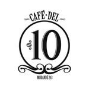
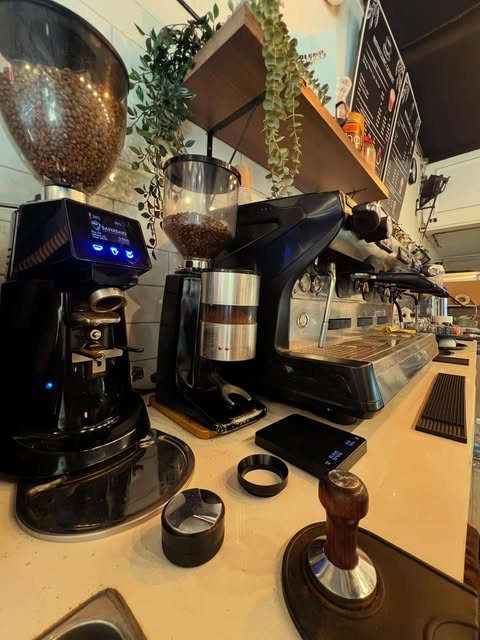
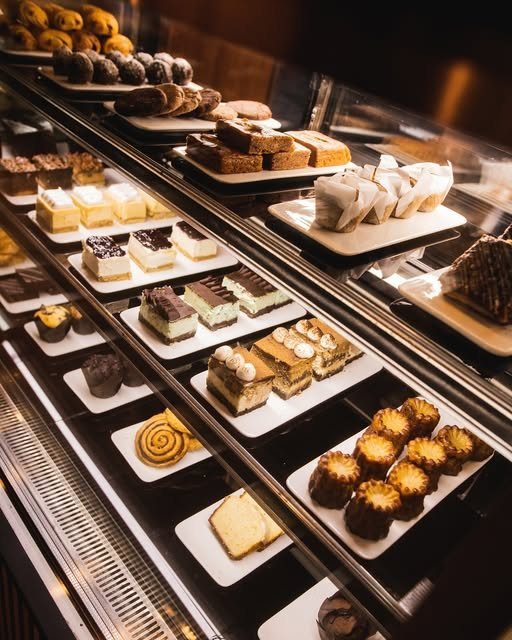
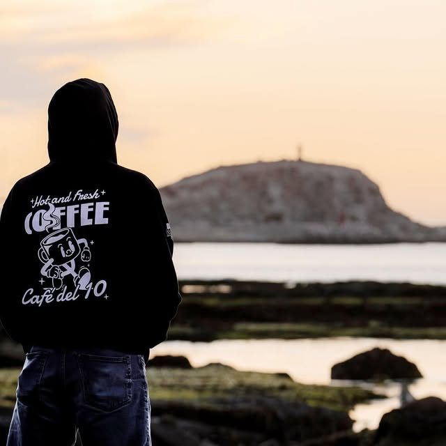

★★★★★
"Lugar agradable y tranquilo en el centro de Santiago, ideal para hacer una pausa y tomar un buen café de grano. Los precios me parecen adecuados y la atención esmerada. Mi espacio favorito es el segundo piso. Lo recomiendo."


Café tostado propio, pastelería francesa y belga, y una antigua notaría familiar reconvertida en el rincón favorito del barrio para hacer una pausa — o una reunión de verdad.
Café del 10 abrió sus puertas en febrero de 2006, cuando el arquitecto Felipe Diez transformó la antigua notaría de su familia en un punto de encuentro para los oficinistas del centro de Santiago. A pocos metros de la Plaza de la Constitución, el local tiene esa sensación de cafetería neoyorquina: gente mirando hacia la calle, otros con laptop o en plena entrevista de trabajo, cada uno a lo suyo pero compartiendo el mismo espacio con alma. Hoy Rocío Carvajal está a cargo de que todo funcione con la misma cercanía de siempre.
El grano se tuesta con no más de una semana de anticipación, con ese perfil que busca el paladar chileno. Hay opciones de leche sin lactosa, de soya y de arroz, y la pastelería —de línea francesa y belga— también piensa en todos: queques veganos, pasteles sin azúcar y un carrot cake sin gluten conviven con las medialunas y sándwiches de siempre.


No todos lo saben, pero arriba de la cafetería hay seis salas privadas pensadas para reuniones y proyectos — con WiFi, pizarra y proyección por HDMI incluidos, más el servicio de la cafetería a un piso de distancia.
personas
personas
personas
"Lugar agradable y tranquilo en el centro de Santiago, ideal para hacer una pausa y tomar un buen café de grano. Los precios me parecen adecuados y la atención esmerada. Mi espacio favorito es el segundo piso. Lo recomiendo."
"Me encantó esta cafetería, por fuera no se imaginan el gran espacio que hay en el segundo piso con mucha iluminación natural. Sus sándwiches, en especial el de salmón, exquisito. Los chicos atienden muy bien y por sobre todo muy simpáticos."
"Muy buen ambiente, excelente atención y todo lo que probé estaba riquísimo, y qué decir del café, 10/10. Recomendado 100%."
Morandé 243, Santiago Centro, Región Metropolitana
Lunes a miércoles 7:30 a 19:45h
Jueves y viernes 8:00 a 19:45h
Sábado y domingo cerrado